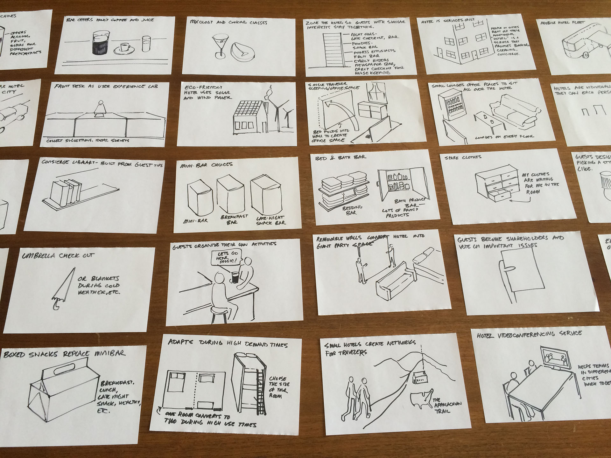

Agenda
1:15-1:25 (10 min) Our sample problem: Grocery store displays and healthy eating.
1:25-1:35 (10 min) 1) “Prototype-to-think”
1:35-1:55 (20 min) Sketching half-page mockups to explore options.
1:55-2:10 (15 min) Discuss results.
2:10-2:20 (10 min) Break
2:20-2:30 (10 min) 2) “Prototype-to-communicate”
2:30-3:30 (60 min) Develop skits.
3:30-3:40 (10 min) Break
3:40-4:40 (60 min) Presentations and discussion.
4:40-4:45 (5 min) Summary, more resources, going further.
[Set of images - get from John]
How might we...
encourage people to install and use a grocery store app that encourages healthy food choices?
Why this topic? Like libraries, grocery stores have an information architecture. They use samples, endcaps and other displays to introduce customers to things they didn’t necessarily come into the store for.
We hope that by spending a few hours prototyping grocery store displays you will have new ideas about ways to introduce library patrons to new services as well.
Choose the right place.
Find high-traffic locations near the front of the store or along busy paths.
Important displays (ex. store apps to promote sale items, or samples of high-margin products) will often be located along the path people use to enter the store.
Many endcap displays are for products that are on sale. It’s surprising how thoroughly people ignore these. They even look away when they pass them.
Displays often incorporate a table- it creates a place along the path to stop.
One woman used a shopping cart to create a mobile display- she could walk up to people in line at the butcher counter and get them to try a sample while they waited. While I watched she sold a lot of cottage cheese.
One woman said, "don’t bother putting the granola display next to the granola—or even the milk. Put it along a path in the store that gets a lot of traffic."
Choose the right time.
This granola display was very successful before a big football game- it seemed like people were looking for an alternative to traditional game day snacks.
This granola stand sold a bunch of granola for a big football game- it seemed like people were looking for an alternative to traditional game day snacks.
Match customer needs.
Live conversations let product reprentatives focus on a benefit like taste, health, or cost that might make sense to a specific shopper.
A woman used a shopping cart as a “movable display”- she was promoting cottage cheese. Wherever she stopped, the cart acted as a table for people to gather around.
Questions: How do sample tables, with a product representative, perform? Do people watch demonstrations? How do they perform? How do samples at the meat counter or deli counter perform? (My guess is that people are less likely to “step up to the counter” for a sample and then leave. Maybe these displays encourage customers who stepped up to the counter for one item to buy two?)
People see words they’re on the lookout for. If people are looking for things without gluten, they’ll see that word on the package. Other people won’t know the word is there
Ask, “Would you like to try one?”
Often, people need a little encouragement to try something new.
Many displays create opportunities for employees (of the store or representing the products themselves) to interact with customers. Store employees sometimes approach customers at “self-service” displays.

Half-page sketches
pg. 42: fidelity vs. resolution. “fidelity refers to the level of similarity to the actual experience you would like to convey. Resolution is the level of detail needed to convey it.”
pg. 42: there are “build to decide” prototypes- relatively high- fidelity things that exist at end of the process, they’re high-resolution. “build to think” prototypes exist to “inform the problem.”
pg. 43: “build to think prototypes serve several important functions: the allow teams to experiment with multiple ‘right’ answers at little cost or committment. they accelerate learning, helping to surface opportunities and limitations early on. they take the abstract and make it tangible and touchable, and there for open to review by stakeholders both on the team and outside of it. they change the converation around the table and create the all-important alignment teams need to proceed in concert.”
Source: Communicating the New: Kim Erwin
Make half-page drawings to explore possible solutions.
Experimentation becomes cheap.
The process allows meaning to surface.
Drawings, placed in groups, make it easier for teams to communicate.
The value is in the process, not the end result.
Get more butcher paper. (It’s great for carrying from one meeting to another- it just rolls right up.) Now we’re going to sketch out ideas for ways that a grocery store endcap might help people eat more healthy food. Try to think of the People, Objects, Environments, Messages and Services associated with the endcap.
Each endcap should have a call-to-action- is it “buy this item now?” or “sign up for a mailing list” or “download an app that can help you...”?
Aim for 20 options. Draw them all out.
“You learn things from building, maybe especially when building before ideas are fully developed.” -marty thaler, pg. 42, Communicating the New.
Rules for brainstorming:
No idea is to be criticized.
Wild ideas are welcome.
Go for quantity.
Combine or improve on the ideas of others.
(From Design Methods
Drawing:
Improves focus.
Improves retention and recall.
Activates the “minds eye”, or the portions of the visual cortex that allow us to see mental imagery and manipulate concepts.
Enhances access to the creative, problem-solving, and subconscious parts of the brain.
Unifies three major learning motalities: visual, auditory, and kinesthetic.
The Miseducation of the Doodle, A List Apart, Sunni Brown
“Most of us have been socialized to believe that making things, whether sketches or models, is for creative people (not us), people with talent and hand skills (again, not us) and who understand the mysteries of color and proportion and form. This is a discouraging, art-based paradigm in which the value of the work is perceived to be in the output and it’s aesthetic properties. (new paragraph) There is a more productive and encouraging paradigm for making artifacts that focuses on discovery, rather than otucome. Let’s call it a learning- based paradigm, in which the value of building is the process of experimentation and the surfacing of meaning. ‘Build to think’ is a low-cost, high-impact method for helping teams find the conceptual center of their work.”
Kim Erwin, Communicating the New
A tip for transforming existing ideas, or components of ideas:
Put to another use.
Adapt.
Modify.
Magnify.
Minify.
Substitute.
Re-arrange.
Reverse.
Combine.
(From "Removing mental blocks," Design Methods
Instructions
Give every idea a short name.
Draw. Sharpies and half-page pieces of paper keep you from getting too detailed.
Take a step back once in a while to see what categories are emerging.
Try for 20 ideas in 20 minutes.
Advice:
If you’re not quite sure the thing you draw looks like what it’s supposed to be, write the word of the object underneath it.
A trick for voting
Looking at each option, each person can put a dot next to their favorite three.
If there is a tie, each person can put a dot next to their favorite.
As a group, make sure you agree that this is a nice idea to move forward with.
Example: Janus Choice
[Image - get from John]
An app to help patients and their families choose a rehabilitation facility after checking out of the hospital.
As part of the BarnRaise 2015 conference, we brainstormed for two days to find ways to communicate about the app.
The skit demonstrates the need for the app and the basic way the app works.
All props were made with paper, Post-It notes and markers. (Note the nurses costume, the patient’s cast, and the app itself, which is being held.)
A slide presentation, visible on the right, gives a text-based overview in a form Janus Choice might use to communicate about their app with potential customers or users.
Building your Skit
Props
Sharpies, paper, humans.
Three-act Skits
Scene 1: Problem.Scene 2: Interacting with the display.Scene 3: Positive effect.
Be concise
Communicate one aspect of the solution well.
Props:
Three-act Skits:
Be concise:
“the simplest way to describe the design process is to divide it into two phases: analysis and synthesis. Or preparation and inspiration. ...How do designers move from analysis to synthesis? From problem to solution? From current situation to preferred future? From research to concept? From constituent needs to proposed response? From context to form?”
Full Quote:
How do designers bridge the gap? The Analysis-Synthesis Bridge Model, Hugh Dubberly, Shelley Evenson, Rick Robinson
Related tactics used in libraries
[Image - get from John]
Further Reading
Books about design methods and creativity
Design methods by jones
101 Design Methods by Vijay Kumar
A Technique for Producing Ideas
Books about drawing
Drawing on the Right Side of the Brain
Bridgeman’s Complete Guide to Drawing from Life
Burt Dodson Keys’ to Drawing
Nicolaides the natural way to draw
Books about drawing
Books about design methods and creativity